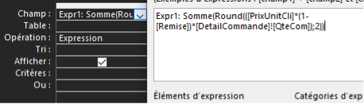

1er Indicateur:
CHIFFRE D'AFFAIREÉnoncé et Interprétation:
Cet indicateur permet d'analyser le chiffre d'affaire total généré avec les données qu'on dispose.Résultat :
QBE ou SQL :


L'objectif principal de cette mission est d'explorer et d'analyser la base de données de l'entreprise
KDou en utilisant une interface low-code, plus précisément le logiciel Microsoft
Access. Ce dernier permet de créer des requêtes grâce à une interface graphique (QBE)
qui génère le code SQL correspondant. Cela permet une exploitation plus efficace des données sans avoir
une maîtrise particulière du langage SQL.
Cet indicateur permet d’analyser les gammes de prix des produits de l’entreprise.
On suppose une analyse économique des ventes qui pourraient être couplées avec des analyses de fréquence de vente des articles pour ainsi mieux comprendre l’économie interne (produits phares/oubliés) de l’entreprise.
Cet indicateur permet d’analyser les produits qui sont conditionnés dans du carton ou du verre. On peut supposer des changements de politique (par exemple écologique) vis-à-vis du conditionnement et on souhaiterait dénombrer le nombre de fournisseur utilisant des bouteilles pour proposer des idées plus respectueuses de l’environnement.